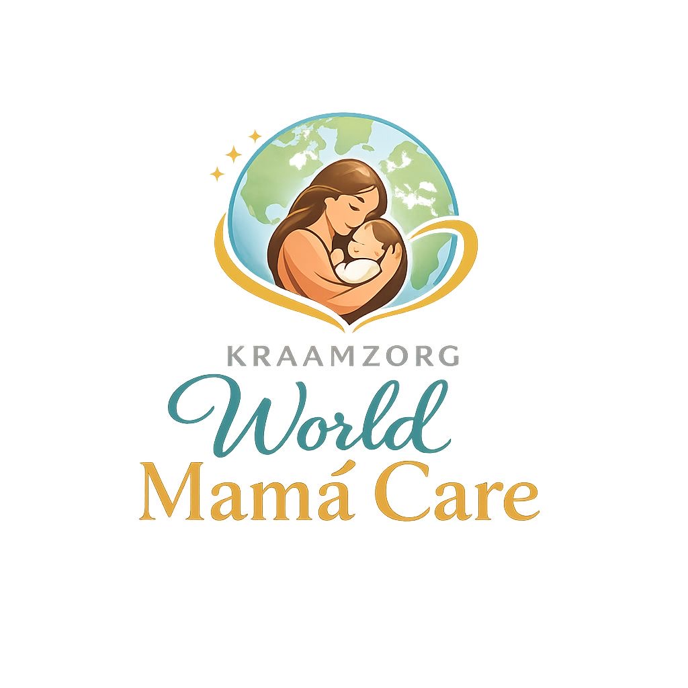

Kraamzorg World Mamá Care biedt warme, deskundige en betrouwbare zorg aan moeder en baby tijdens de eerste dagen na de bevalling.
Wij controleren dagelijks de gezondheid van moeder en baby, ondersteunen bij borstvoeding of flesvoeding en geven praktische uitleg over verzorging en hygiëne.
Met rust, aandacht en professionaliteit begeleiden wij gezinnen, zodat zij met vertrouwen kunnen genieten van hun kraamtijd.
Den Haag en omgeving (Zuid-Holland). Neem gerust contact op om beschikbaarheid te bespreken.